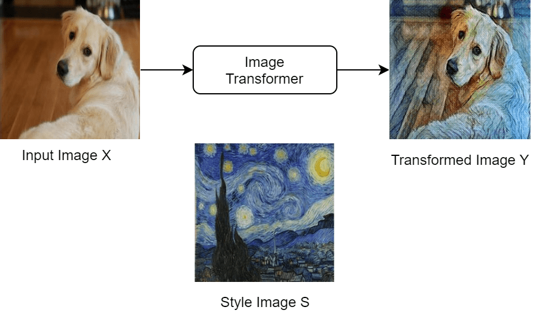
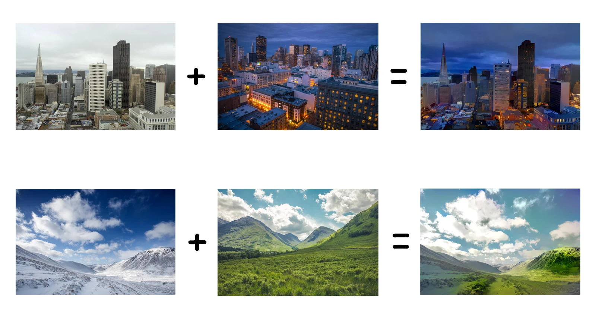
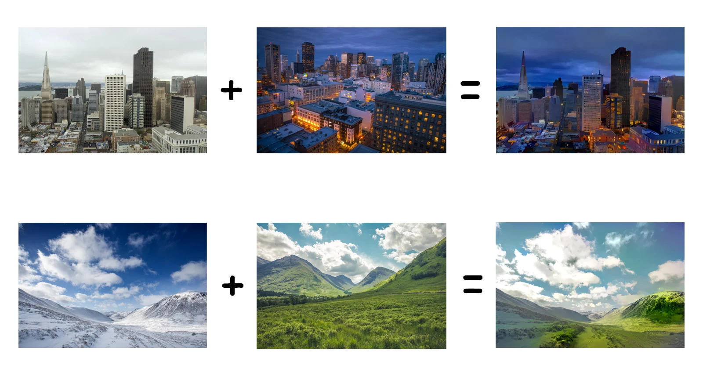

NEURAL NETWORK
A neural network is structured like the human brain and consists of artificial neurons, also known as nodes. These nodes are stacked next to each other in three layers:

Data provides each node with information in the form of inputs. The node multiplies the inputs with random weights, calculates them, and adds a bias. Finally, nonlinear functions, also known as activation functions, are applied to determine which neuron to fire.
CNN's, also known as ConvNets, consist of multiple layers and are mainly used for image processing and object detection.
Data provides each node with information in the form of inputs. The node multiplies the inputs with random weights, calculates them, and adds a bias. Finally, nonlinear functions, also known as activation functions, are applied to determine which neuron to fire.
VGG16 is a convolution neural net (CNN ) architecture:
Most unique thing about VGG16 is that instead of having a large number of hyper-parameter they focused on having convolution layers of 3x3 filter with a stride 1 and always used same padding and maxpool layer of 2x2 filter of stride 2. It follows this arrangement of convolution and max pool layers consistently throughout the whole architecture. In the end it has 2 FC(fully connected layers) followed by a softmax for output. The 16 in VGG16 refers to it has 16 layers that have weights. This network is a pretty large network and it has about 138 million (approx) parameters.
 

The content loss function: The content loss function ensures that the activations of the higher layers are similar between the content image and the generated image. top-most CNN layer to define the content loss function.
Let
A^l_{ij}(I) be the activation of the l th layer,
i th feature map and j th position obtained using the image I.
Then the content loss is defined as,
Essentially L_{content} captures the root mean squared error between the activations produced by the generated image and the content image
The style loss function:
The style loss function makes sure that the correlation of activations in all the layers are similar between the style image and the generated image. style information is measured as the amount of correlation present between features maps in a given layer. Next, a loss is defined as the difference of correlation present between the feature maps computed by the generated image and the style image. Mathematically, the style loss is defined as,
w^l (chosen uniform) is a weight given to each layer during loss computation and M^l is a hyperparameter that depends on the size of the l th layer.
The style matrix is essentially a Gram matrix, where the (i,j) th element of the style matrix is computed by computing the element wise multiplication of the i th and j th feature maps and summing across both width and height. In the figure, red cross denotes element wise multiplication and the red plus sign denotes summing across both width height of the feature maps.

The final loss is defined as,
where α and β are user-defined hyperparameters. Here β has absorbed the M^l normalisation factor defined earlier. By controlling α and β you can control the amount of content and style injected to the generated image.
The Adam optimiser to optimise the loss of the network. Adam optimizer involves a combination of two gradient descent methodologies:
Parameters Used :
1. ϵ = a small +ve constant to avoid 'division by 0' error when (vt -> 0). (10-8)
2. β1 & β2 = decay rates of average of gradients in the above two methods. (β1 = 0.9 & β2 = 0.999)
3. α — Step size parameter / learning rate (0.001)
Since mt and vt have both initialized as 0 (based on the above methods), it is observed that they gain a tendency to be ‘biased towards 0’ as both β1 & β2 ≈ 1. This Optimizer fixes this problem by computing ‘bias-corrected’ mt and vt. This is also done to control the weights while reaching the global minimum to prevent high oscillations when near it. The formulas used are: Intuitively, we are adapting to the gradient descent after every iteration so that it remains controlled and unbiased throughout the process, hence the name Adam. Now, instead of our normal weight parameters mt and vt , we take the bias-corrected weight parameters (m_hat)t and (v_hat)t. Putting them into our general equation, we get